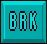
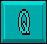

When fast-run is used, the program's own display is used and the program is run at full
speed. If an error is not found, the only way to return to the Monitor during a fast-run is to
press [Ctrl]+[C], or use break points.
When fast-run is used, the program's own display is used and the program is run at full
speed. If an error is not found, the only way to return to the Monitor during a fast-run is to
press [Ctrl]+[C], or use break points.Fast-Run Button
When fast-run is used, the program's own display is used and the program is run at full
speed. If an error is not found, the only way to return to the Monitor during a fast-run is to
press [Ctrl]+[C], or use break points.
Break Point Button

Click on the break point button with the left mouse button as usual, then click on the
instruction in the program listing wherever you wish to set the break. The instruction will
be highlighted in inverse video. To remove a break point, click on an area which is adjacent to
the highlighted listing, such as the area without any commands or text to the right of the
program lines.
Evaluation Button
 The button marked [VAL] allows you to use a very accurate setting for the evaluation
process. Click on the button and then use the mouse to set the individual character that
marks the beginning of the expression to be evaluated. With the button held down, drag it to
the character in the listing to mark the end of the expression you are interested in, and release
the button to underline the expression. The evaluation will now be reported in the Information
Window.
The button marked [VAL] allows you to use a very accurate setting for the evaluation
process. Click on the button and then use the mouse to set the individual character that
marks the beginning of the expression to be evaluated. With the button held down, drag it to
the character in the listing to mark the end of the expression you are interested in, and release
the button to underline the expression. The evaluation will now be reported in the Information
Window.
Help Button
 Click on the help button [?], then click on the instruction you need help with. The
keyword will be underlined, and the trusty AMOS Professional Help Window will appear,
at your service.
Click on the help button [?], then click on the instruction you need help with. The
keyword will be underlined, and the trusty AMOS Professional Help Window will appear,
at your service.
Quit

This button takes you back to the Editor. If the Monitor system has been called up from
inside a program using the MONITOR command, you will be returned to the program at
the instruction immediately after that command.
Evaluating expressions
The Monitor may be simple to use, but it is incredibly skilful in the way it analyses expressions,
and reports the results back to you. here are the ground rules for a simple demonstration. First,
run this example to give yourself something to work on, and then call up the Monitor.
E> A=1 : B=2 : C=3 D=A+B*C-1 Print D
Initialise the program by clicking on the [INIT] button. If you were to press [VAL] and ask for an evaluation of A+B without first initialising B, you would be asking for the impossible. Also, if you asked for an evaluation of "k", you would be told that it is not possible to evaluate something that is plainly idiotic! On the other hand, if you ask for an evaluation of something self evident, like "1", it will be given. Also, the expression must be at the same level of procedure as the program pointer.